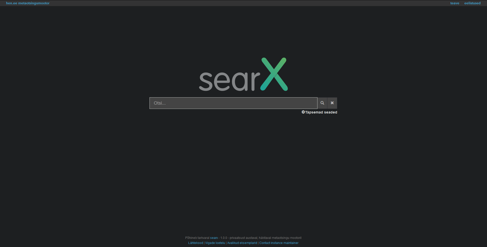
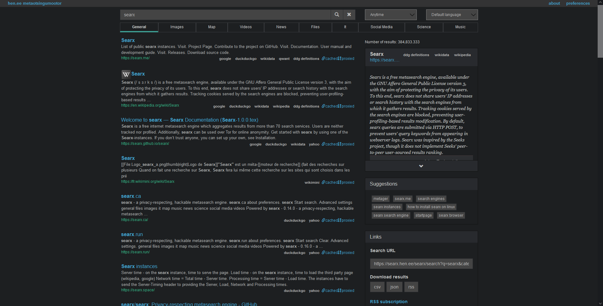

This is a guide on setting up your own Searx instance with Filtron reverse proxy and Morty result proxy.
What is Searx?
Searx is a privacy-respecting metasearch engine. It is not a regular search engine like Brave Search, Bing or Google which indexes information from pages by using their bots. A meta-search engine asks other search engines for results and presents them to you. It is also free and open-source and hackable.
It can also act as a proxy for these search engines as your server is doing the requests to Google not your machine which is more private while still having Google's results. One downside can be the speed due to it having to pull information from another server; some engines might be slower than others and that is shown on Searx's settings.
You can find a public instance to test it here
 What is all this Filtron or Morty stuff?
Filtron is an application firewall, a middleware between Searx and Nginx (webserver). It avoids abuse from your server and limits requests. Essentialy it protects your server from bad people.
Morty is a result proxy which proxies images and websites. It downloads the images and displays them from your server like Searx. You can also view websites through your server privately without using your machine to request that website, almost like a VPN.
Setting it up
(YOUR DOMAIN HERE) in this guide means your domain (for example: landchad.net) and will require changing from you. This guide uses Debian 10.
First we will make a subdomain. If you used our Epik DNS guide you can skip this step. This is different from all registars but make a CNAME record for your domain like so: (Some will like the dot at the end, some will not)
searx 1800 IN CNAME (YOUR DOMAIN HERE).Cloudflare's DNS for example:
Installing Searx
When you have done that, we will update the system. You will need Nginx and Git for this, these commands will install it for you. You should have sudo privileges or be root. If you are the root user you can omit sudo from the commands.
sudo apt update
sudo apt upgrade
sudo apt install git nginxInstalling Searx.
We will clone the Searx repository. NB: if you are the root user, make sure to not skip the first command.
cd /usr/local/src
sudo git clone https://github.com/searx/searx searx
cd ./searx
Now we will use the install script to install Searx, Filtron and Morty. Some questions will come up, press enter to all of them.
sudo -H ./utils/searx.sh install all
sudo -H ./utils/filtron.sh install all
sudo -H ./utils/morty.sh install allCheck if all services are running.
sudo systemctl status searx
sudo systemctl status filtron
sudo systemctl status mortyIf everything is installed and all services are running, we can setup Nginx.
Nginx config
Make sure Nginx is running (if it's not running you can check for errors using the command nginx -t). More detailed guide on Nginx can be found at here.
sudo systemctl status nginxWe will make a config file for Searx /etc/nginx/sites-available/searx.conf and edit it:
sudo nano /etc/nginx/sites-available/searx.confPaste the following content in there and replace (YOUR DOMAIN HERE) with your domain name.
server {
listen 80;
listen [::]:80;
server_name searx.(YOUR DOMAIN HERE);
root /usr/local/searx/searx-src;
# If you want to log user activity, comment these
access_log /dev/null;
error_log /dev/null;
add_header X-Frame-Options DENY;
add_header X-Content-Type-Options nosniff;
add_header X-XSS-Protection "1; mode=block";
add_header Permissions-Policy "interest-cohort=();geolocation=();midi=();notifications=();push=();sync-xhr=();microphone=();camera=();magnetometer=();gyroscope=();speaker=();vibrate=();fullscreen=();payment=();";
add_header 'Referrer-Policy' 'same-origin';
add_header Expect-CT 'enforce; max-age=3600';
# SSL settings for security (DO NOTE: This disables TLS 1.0 and TLS 1.1 + some ciphers, if you have any older browsers and hardware [https://oktasupport.cadence.com/TLS1.2_BrowserSupport.html], it may not work on them)
ssl_protocols TLSv1.2 TLSv1.3;
ssl_prefer_server_ciphers on;
ssl_ciphers ECDHE-ECDSA-AES128-GCM-SHA256:ECDHE-RSA-AES128-GCM-SHA256:ECDHE-ECDSA-AES256-GCM-SHA384:ECDHE-RSA-AES256-GCM-SHA384:ECDHE-ECDSA-CHACHA20-POLY1305:ECDHE-RSA-CHACHA20-POLY1305:DHE-RSA-AES128-GCM-SHA256:DHE-RSA-AES256-GCM-SHA384;
ssl_session_timeout 1d;
ssl_session_cache shared:SSL:10m;
ssl_session_tickets off; # Requires nginx >= 1.5.9
ssl_stapling on; # Requires nginx >= 1.3.7
ssl_stapling_verify on; # Requires nginx => 1.3.7
index index.html index.htm;
# Searx reverse proxy
location / {
proxy_pass http://127.0.0.1:4004/;
proxy_set_header Host $http_host;
proxy_set_header Connection $http_connection;
proxy_set_header X-Real-IP $remote_addr;
proxy_set_header X-Forwarded-For $proxy_add_x_forwarded_for;
proxy_set_header X-Scheme $scheme;
proxy_set_header X-Script-Name /searx;
}
location /searx/static {
alias /usr/local/searx/searx-src/searx/static;
}
# Morty reverse proxy
location /morty {
proxy_pass http://127.0.0.1:3001/;
proxy_set_header Host $http_host;
proxy_set_header Connection $http_connection;
proxy_set_header X-Real-IP $remote_addr;
proxy_set_header X-Forwarded-For $proxy_add_x_forwarded_for;
proxy_set_header X-Scheme $scheme;
}
}
Create a symbolic link between /etc/nginx/sites-available/searx.conf and /etc/nginx/sites-enabled/searx.conf
sudo ln -s /etc/nginx/sites-available/searx.conf /etc/nginx/sites-enabled/searx.confCreate a HTTPS certificate using Lets Encrypt's certbot. More details on how to do it are here.
If you have done that you can now restart Nginx and Uwsgi.
sudo -H systemctl restart nginx
sudo -H service uwsgi restart searxGo visit your searx.(YOUR DOMAIN HERE) and see if it works!
Changing settings
If you want to change some settings of your Searx instance go edit /etc/searx/settings.yml. Use this guide for more information.
sudo nano /etc/searx/settings.yml
### After editing do:
sudo -H service uwsgi restart searxMaintaining Searx
To update Searx you can use the following commands:
cd /usr/local/src/searx
sudo -H ./utils/searx.sh update searx
sudo -H ./utils/filtron.sh update filtron
sudo -H ./utils/morty.sh update mortyUninstalling Searx
To uninstall, execute these commands:
cd /usr/local/src/searx
sudo -H ./utils/searx.sh remove all
sudo -H ./utils/filtron.sh remove all
sudo -H ./utils/morty.sh remove allNeed help?
Of course you can write an angry e-mail to Luke about why you have such incompetent people creating these guides but please check out this and this before. Also check nginx -t for any errors with Nginx.